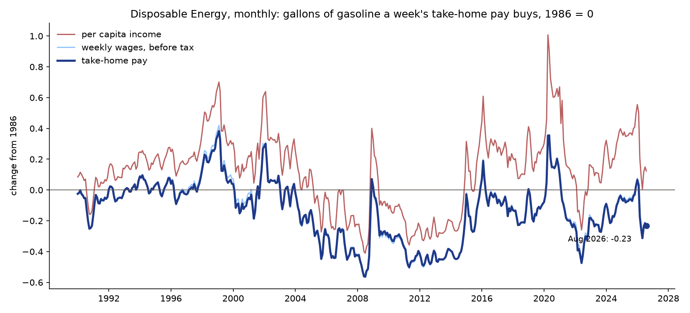
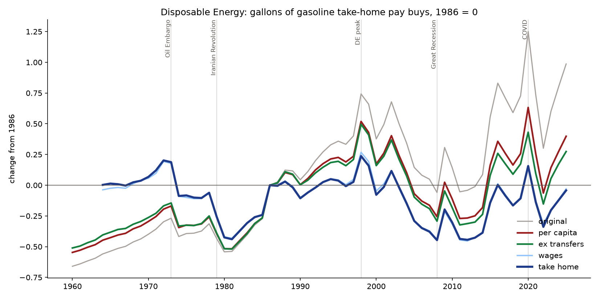

How much energy people can buy with their take-home pay. Life requires energy. Less affordable energy, less life.
—
gallons
—
same measure, 12 months earlier
—

GDP measures the speed of the economic flywheel. Disposable Energy measures its input: labor applying affordable energy. Because the flywheel has momentum, a loss of Disposable Energy shows up in jobs and output only after a delay.
take-home pay = average weekly earnings × (1 − income and payroll tax rate) gallons(month) = take-home pay / retail gasoline price DE(month) = gallons(month) / gallons(1986) − 1 (1986 = 0)
Actual dollars, no inflation index. Wages and gas prices are both in the dollars of the same month, so inflation cancels in the ratio. The number moves only when one outruns the other. No choice of price index, no adjustment to argue over.
Take-home pay, not GDP. The headline starts from BLS average weekly earnings of production and nonsupervisory workers — pay from work — and subtracts the average rate of personal income tax and employee payroll tax (BEA). Income measures that include government transfers count money printing as if it were earned.

Current analysis: Record Diesel, Disposable Energy, and Unemployment — October 2026.
This is a first, reproducible attempt, not finished science. The correlations are modest. We invite economists, energy researchers, and students to check the method, break it, and improve it.
Method, data, code, and open questions: github.com/JPods/disposableenergy. Every number on this page is regenerated from public data by one script.
Bill James · bill.james@jpods.com